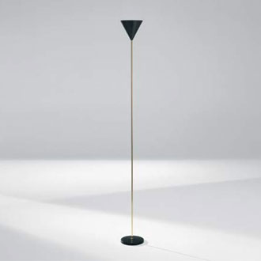

Imbuto floor lamp by Luigi Caccia Dominioni
To build the Imbuto floor lamp I started with the reflector on the top. I have defined a NUBS that take 3 data points, then I passed this NUBS to the Rotational_Surface plasm function and finally I mapped this surface with a specific "rotational" domain.
var pointsup = [[0.2,0,0],[1,0,1.5],[2,0,3]] var knotsup = generateKnot(pointsup); var nubsup = NUBS(S0)(2)(knotsup)(pointsup) var surSup = ROTATIONAL_SURFACE(nubsup) var lamp = COLOR([0.4,0.4,0.4])(MAP(surSup)(domainRot))
To obtain the base of the lamp I used the plasm.js functions DISK()() that draws a circular surface (then extruded to give it the depth) and CYL_SURFACE()() to draw the stand bar.
var bar = COLOR(rgb01(246,172,0))(CYL_SURFACE([0.2,19])(30)) var base = COLOR([0.4,0.4,0.4])(EXTRUDE([0.5])(DISK()()))
Imbuto floor lamp original model

Results obtained in Javascript and Pyplasm